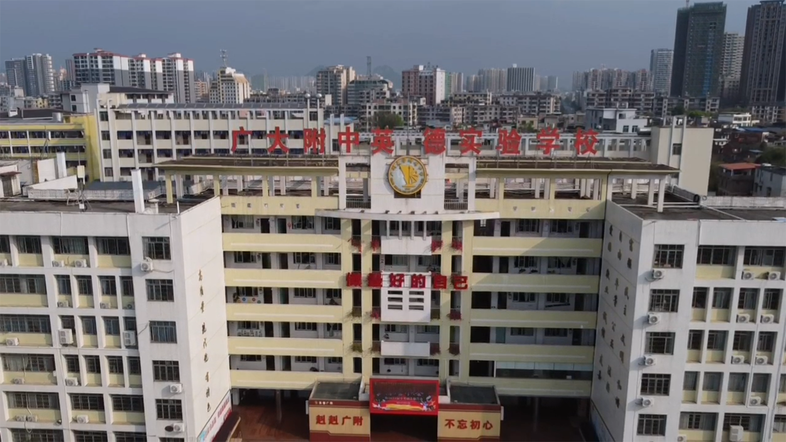

做最好的自己！

学校简介
广州大学附属英德实验学校创办于2020年9月1日，是由英德市人民政府和广州大学附属中学合作创办的一所公办学校，学校地址位于英德市裕光路205号 备受英德市民群众关注的广大附中英德实验学校经过8个多月紧张有序的筹备和建设，8月26日顺利揭牌，9月1日将正式开学。此举表明英德学子将在家门口直享广州一线品质教育资源。英德市主要领导、英德市教育局、财政局及相关单位，广大附中校领导及教师职工代表参加了揭牌仪式。 据了解，广大附中英德实验学校是由英德市人民政府和广州大学附属中学（下称“广大附中”）合办的一所公办学校，校址位于原英德市第二中学，目前已筹建完毕，并已完成招生工作。学校将于9月1日正式开学，开设高一教学班6个、初一教学班10个，增加该市初中、高中阶段优质学位800个，将进一步满足群众优质教育需求，引领带动英德教育教学质量整体提升，推动英德教育高质量发展。 英德市委副书记、市长肖勇科在揭牌仪式上致辞时表示，百年大计，教育为本。一直以来，英德市委、市政府坚持教育优先发展，不断加大教育投入，加快完善教育基础设施建设，持续深化教育体制机制改革，有效提升了英德教育改革发展的质量和水平，人民群众对英德教育的认可度和满意度正在不断提升。广大附中英德实验学校，就是其中的一个重要项目。英德市委、市政府将继续全力支持广大附中英德实验学校发展，努力把广大附中英德实验学校打造成一所高品质、有特色、有影响力的教育品牌，推动英德教育再上新台阶。